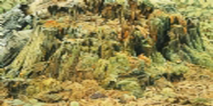
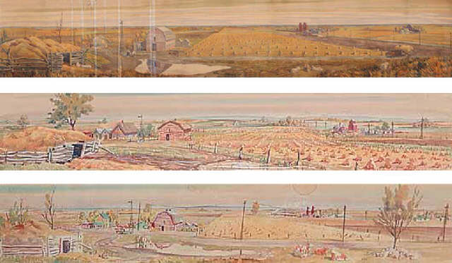
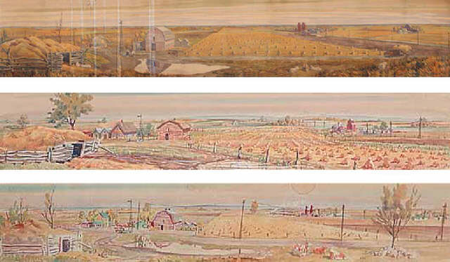

Earnest Lindner was born May 1st, 1897 in Vienna, Austria. In Earnest's younger years he was a lieutenant in the Joint Austrian Air-force from 1915 to 1918. He worked as a bank clerk and in his family's walking stick firm until his emigration to Canada in the 1920s. He started out teaching a night class at Saskatoon Technical Collegiate until 1931, then he finally became a full-time instructor and Head of the Art Department (1931-1962). He returned to Austria to take a Master course in etching and stone lithography at the Akademie der Angewandten Kunst of Vienna (1959). Earnest Lindner was very active in the local, provincial and national arts communities. In Saskatoon he was in a discussion group called "Saturday Nights" and it was an art group that met every Saturday Night and the art group was usually held in Earnest's home. He was a member and a President of the Saskatoon Art Association, one of the first members on the Saskatchewan Arts Board and he was in a group called "Prospectors", the first group of Professional Artist's in Saskatchewan. From the year 1962 to 1988, Earnest worked full-time as a artist and was known for his engraving and his watercolours.
Earnest Lindner




This image is called Puff balls, 1971

This image was called Untitled - Stump, 1975
He called this image Untitled - Saskatchewan panorama, 1952
Updated by Mark Romanow 2011